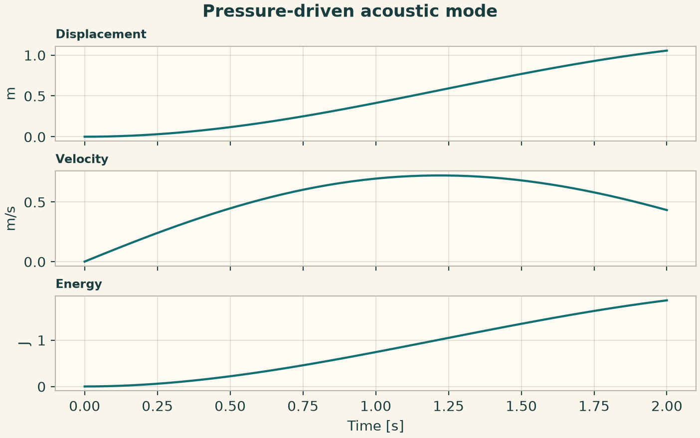
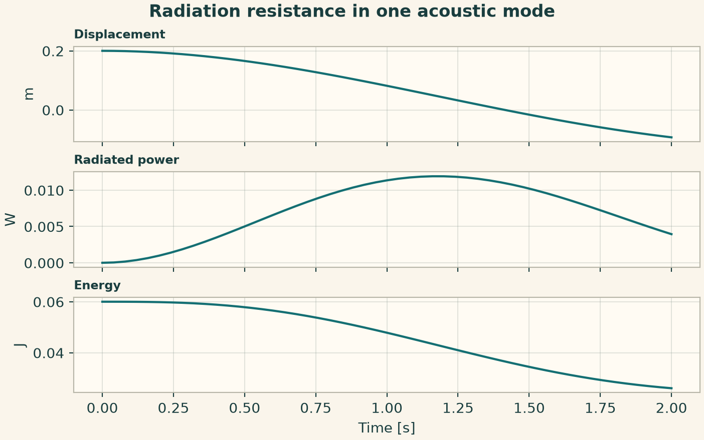
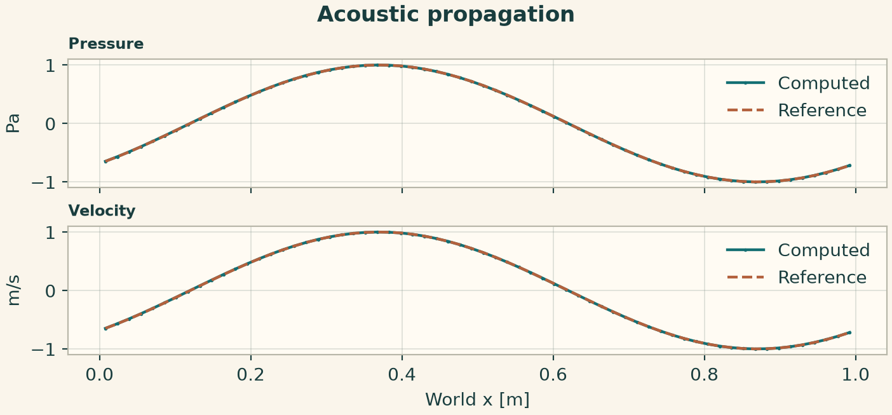
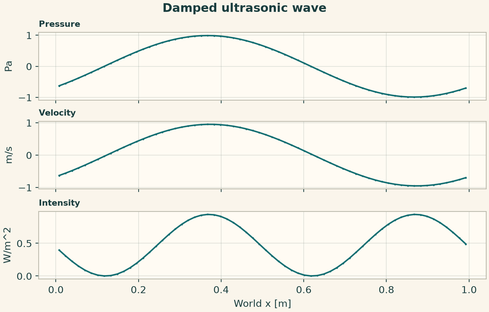
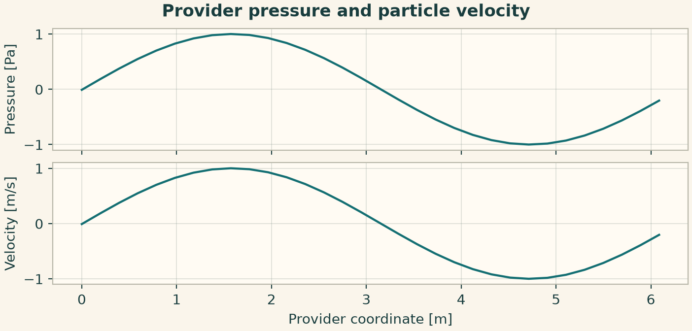
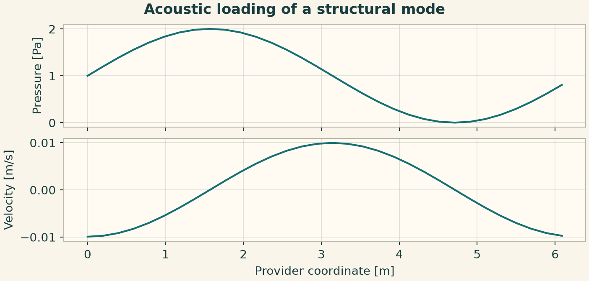
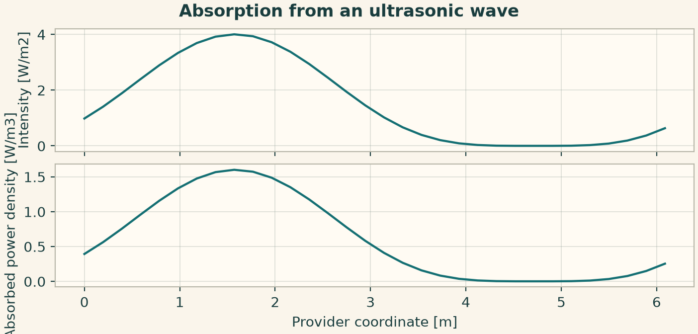
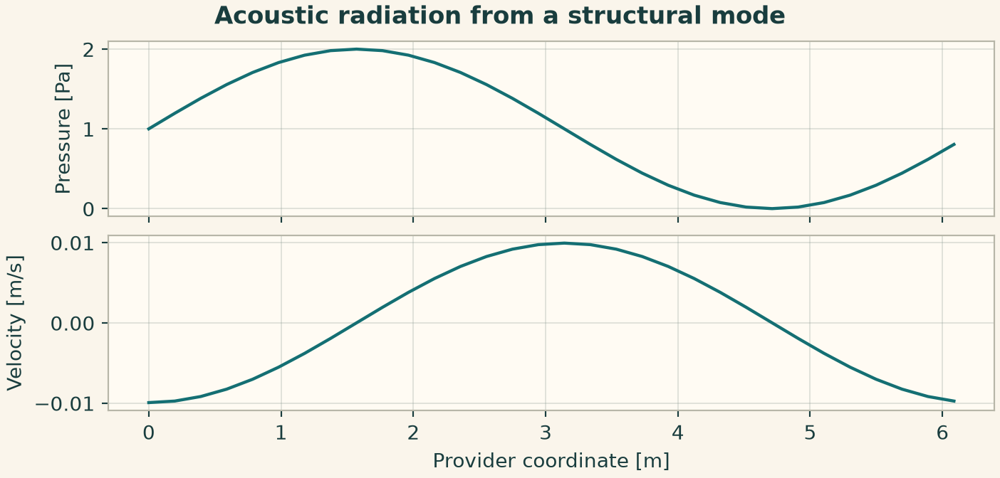
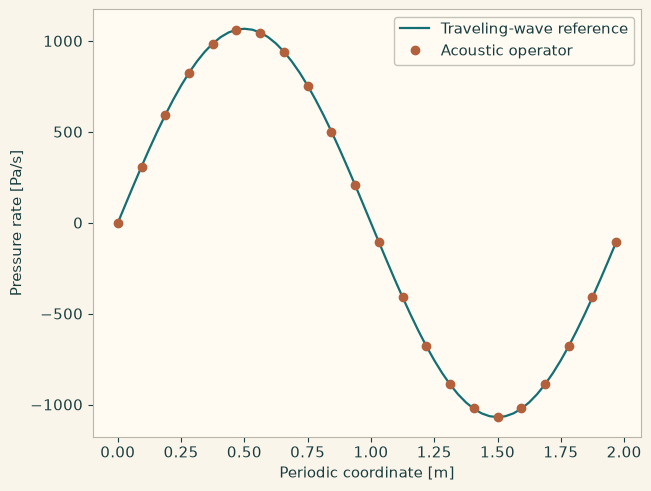

Docs › Worked physics and service recipes › Acoustics recipes
6.4 Acoustics recipes
This section includes the field-based declarations and the independently callable acoustics service configurations. The configuration keys in the service recipes belong to the indicated provider.
6.4.1 Pressure-driven acoustic mode
Apply a constant pressure to a single effective area. Displacement and modal energy show the build-up from rest.
from onesim.physics.acoustics import PressureDrivenMode
domain = LumpedDomain()
model = PressureDrivenMode(
domain=domain.system,
mass=2,
stiffness=3,
area=0.5,
damping=0.4,
pressure_loading=4,
)
t, data = history_case(
domain,
model,
dict(displacement=0.0, velocity=0.0),
("displacement", "velocity", "energy"),
end=2,
dt=0.01,
)
assert data["displacement"][-1] > 0
fig = history_plot("Pressure-driven acoustic mode", model, t, data)
plt.show()

6.4.2 Radiation resistance in one acoustic mode
Release an initially displaced mode. The constant radiation resistance converts modal motion into nonnegative radiated power.
from onesim.physics.acoustics import RadiatingMode
domain = LumpedDomain()
model = RadiatingMode(
domain=domain.system,
mass=2,
stiffness=3,
area=0.5,
damping=0.4,
radiation_resistance=0.3,
)
t, data = history_case(
domain,
model,
dict(displacement=0.2, velocity=0.0),
("displacement", "radiated_power", "energy"),
end=2,
dt=0.01,
)
assert data["radiated_power"].min() >= 0 and data["energy"][-1] < data["energy"][0]
fig = history_plot("Radiation resistance in one acoustic mode", model, t, data)
plt.show()

6.4.3 Propagation of a plane acoustic wave
Initialize pressure and velocity with the same right-moving characteristic. Their relative amplitude is set by acoustic impedance. A periodic domain isolates the phase error.
from onesim.physics.acoustics import LinearAcoustics
line = Line(start=(0, 0, 0), end=(1, 0, 0))
model = LinearAcoustics(domain=line.line, density=1, sound_speed=1)
wave = lambda x: np.sin(2 * np.pi * x)
end = 0.12
result = line_experiment(
line,
model,
dict(pressure=wave, velocity=wave),
FiniteDifference(gradient=CentralDifference()),
cells=64,
end=end,
dt=0.001,
)
exact = lambda x: wave(x - end)
p = result.field(model.pressure)
np.testing.assert_allclose(p.values, exact(p.space.dof_coordinates[:, 0]), atol=0.002)
fig = profile_figure(
"Acoustic propagation",
result,
model,
("pressure", "velocity"),
reference={"pressure": exact, "velocity": exact},
)
plt.show()

6.4.4 Damped ultrasonic wave and intensity
This declaration shares the pressure and velocity balance and exposes an intensity diagnostic. The signed intensity is pressure times particle velocity.
from onesim.physics.acoustics import UltrasonicAcoustics
line = Line(start=(0, 0, 0), end=(1, 0, 0))
model = UltrasonicAcoustics(
domain=line.line, density=1, sound_speed=1, velocity_damping=0.5
)
wave = lambda x: np.sin(2 * np.pi * x)
result = line_experiment(
line,
model,
dict(pressure=wave, velocity=wave),
FiniteVolume(convection=Rusanov(), reconstruction=MUSCL()),
cells=64,
end=0.12,
dt=0.001,
)
p = result.field(model.pressure).values
u = result.field(model.velocity).values
np.testing.assert_allclose(result.field(model.intensity).values, p * u)
fig = profile_figure(
"Damped ultrasonic wave", result, model, ("pressure", "velocity", "intensity")
)
plt.show()

6.4.5 Provider pressure and particle velocity
Specify both initial arrays on the provider coordinate grid. The wave moves without coupling to a mechanical mode.
from onesim.physics.acoustics import AcousticsConfiguration, AcousticsPublicApi
n = 32
x0 = np.linspace(0, 1, n, endpoint=False)
wave = np.sin(2 * np.pi * x0)
configuration = AcousticsConfiguration(
parameters=dict(
cell_count=n,
final_time=0.01,
time_step=0.0001,
initial_pressure=wave,
initial_velocity=wave,
sound_speed=1,
)
)
result = run_service(AcousticsPublicApi(), configuration)
fig = service_figure(
"Provider pressure and particle velocity",
result.coordinates,
"Provider coordinate [m]",
("Pressure [Pa]", result.pressure),
("Velocity [m/s]", result.velocity),
)
plt.show()

6.4.6 Acoustic loading of a structural mode
The structural service delegates the line wave calculation and advances a driven mode from its spatial pressure. Read the acoustic carrier through the nested result.
from onesim.physics.acoustics import (
StructuralAcousticsConfiguration,
StructuralAcousticsPublicApi,
)
n = 32
x0 = np.linspace(0, 1, n, endpoint=False)
wave = np.sin(2 * np.pi * x0)
configuration = StructuralAcousticsConfiguration(
parameters=dict(
cell_count=n,
final_time=0.01,
time_step=0.0001,
initial_pressure=1 + wave,
initial_velocity=0.15,
modal_mass=2,
modal_stiffness=3,
area=0.5,
)
)
result = run_service(StructuralAcousticsPublicApi(), configuration)
fig = service_figure(
"Acoustic loading of a structural mode",
result.acoustics_result.coordinates,
"Provider coordinate [m]",
("Pressure [Pa]", result.acoustics_result.pressure),
("Velocity [m/s]", result.acoustics_result.velocity),
)
plt.show()

6.4.7 Absorption from an ultrasonic wave
Specify the absorption coefficient separately from the wave parameters. The facade returns absorbed power density on its acoustic coordinates.
from onesim.physics.acoustics import UltrasoundConfiguration, UltrasoundPublicApi
n = 32
x0 = np.linspace(0, 1, n, endpoint=False)
wave = np.sin(2 * np.pi * x0)
configuration = UltrasoundConfiguration(
parameters=dict(
cell_count=n,
final_time=0.01,
time_step=0.0001,
initial_pressure=1 + wave,
initial_velocity=1 + wave,
absorption_coefficient=0.4,
)
)
result = run_service(UltrasoundPublicApi(), configuration)
fig = service_figure(
"Absorption from an ultrasonic wave",
result.coordinates,
"Provider coordinate [m]",
("Intensity [W/m2]", result.intensity),
("Absorbed power density [W/m3]", result.absorbed_power_density),
)
plt.show()

6.4.8 Acoustic radiation from a structural mode
Supply initial modal velocity and radiation resistance. The final radiated power is a mode diagnostic, and the nested acoustic result retains the carrier.
from onesim.physics.acoustics import (
VibroacousticsConfiguration,
VibroacousticsPublicApi,
)
n = 32
x0 = np.linspace(0, 1, n, endpoint=False)
wave = np.sin(2 * np.pi * x0)
configuration = VibroacousticsConfiguration(
parameters=dict(
cell_count=n,
final_time=0.01,
time_step=0.0001,
initial_pressure=1 + wave,
initial_velocity=0.15,
radiation_resistance=0.4,
)
)
result = run_service(VibroacousticsPublicApi(), configuration)
fig = service_figure(
"Acoustic radiation from a structural mode",
result.structural_acoustics.acoustics_result.coordinates,
"Provider coordinate [m]",
("Pressure [Pa]", result.structural_acoustics.acoustics_result.pressure),
("Velocity [m/s]", result.structural_acoustics.acoustics_result.velocity),
)
plt.show()

6.4.9 Evaluate the low-level acoustic rate
Bind an acoustic provider directly to its spatial operator. Compare the pressure and velocity rates for a periodic traveling wave with the analytical and centered-difference references.
import numpy as np
import matplotlib.pyplot as plt
import onesimulation_plot_theme as theme
theme.use_theme()
from onesim.numerics.discretization.equations.contracts.operators.operator_contracts import SpatialExecutionContext
from onesim.physics.acoustics import AcousticsProvider, AcousticsSpatialOperator
density = 1.2 # kg/m³
speed = 340.0 # m/s
count = 64
length = 2.0 # m
provider = AcousticsProvider(cell_count=count, density=density, sound_speed=speed,
bounds=(0.0, length), periodic=True)
operator = AcousticsSpatialOperator(provider, kernel_choice="numpy")
x, = operator.coordinate_axes
wave_number = 2*np.pi/length
pressure = np.cos(wave_number*x)
velocity = pressure/(density*speed)
state = np.stack((pressure, velocity))
context = SpatialExecutionContext("periodic-line", "pressure-velocity", 0.0)
rate = np.asarray(operator.residual(state, context).values)
exact_pressure_rate = speed * wave_number * np.sin(wave_number*x)
discrete_factor = np.sinc(wave_number * operator.spacings[0] / np.pi)
np.testing.assert_allclose(rate[0], discrete_factor * exact_pressure_rate, atol=1e-10)
assert np.max(np.abs(rate[0] - exact_pressure_rate)) < 0.002 * np.max(np.abs(exact_pressure_rate))
np.testing.assert_allclose(rate[1], rate[0]/(density*speed), atol=1e-12)
fields = operator.reconstruction(state, context)
np.testing.assert_allclose(fields["pressure"], pressure)
np.testing.assert_allclose(fields["velocity"], velocity)
fig, ax = plt.subplots(layout="constrained")
ax.plot(x, exact_pressure_rate, label="Traveling-wave reference")
ax.plot(x[::3], rate[0, ::3], "o", label="Acoustic operator")
ax.set(xlabel="Periodic coordinate [m]", ylabel="Pressure rate [Pa/s]")
ax.legend()
plt.show()
